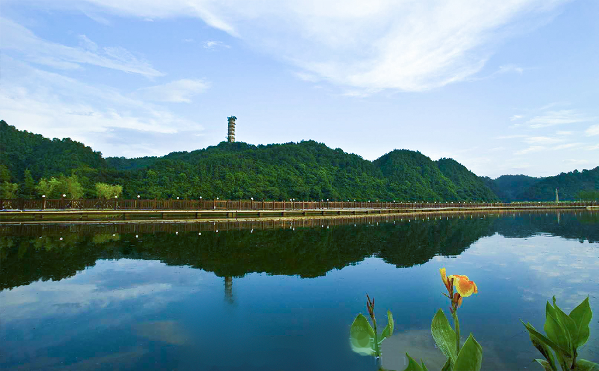
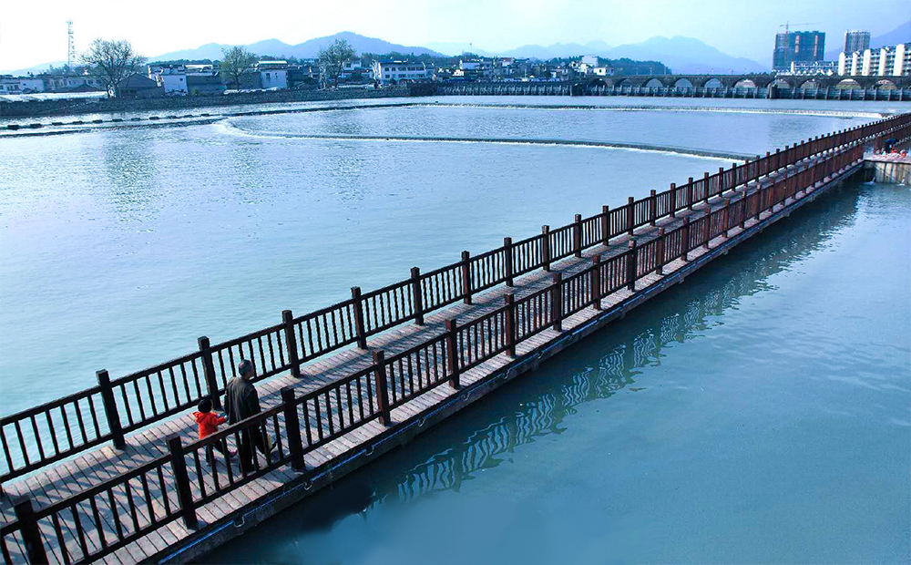
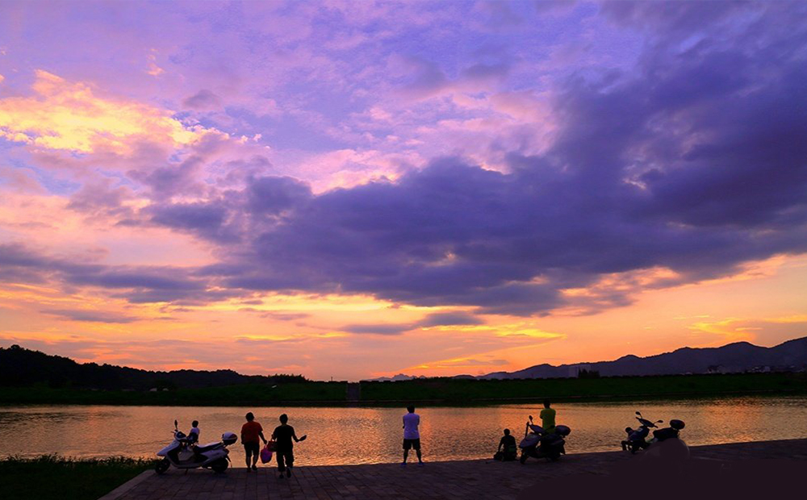
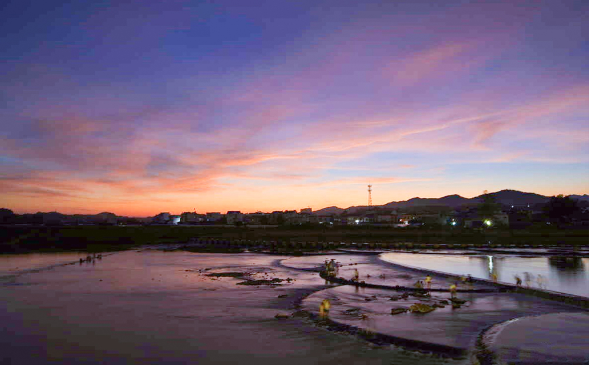
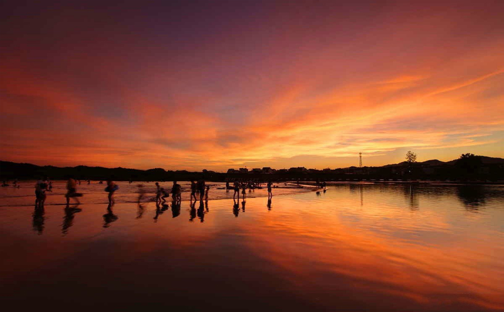

·横江公园介绍
安徽休宁横江国家湿地公园是以保护横江优良水质、丰富的动植物资源、保障千岛湖水生态安全为出发点，充分利用良好的湿地资源条件，展示优美的皖南水乡风光和源远流长的横江历史人文景观，开展湿地保育、科研监测和生态旅游等活动，将其建成集湿地保护、横江历史文化展示、科研监测及湿地生态旅游于一体的国家级湿地公园，为生态保护型湿地公园。
湿地公园中野生植物丰富，考察记录高等植物138科、346属、493种；其中苔藓植物16科、24属、26种；蕨类植物18科、32属、40种；裸子植物4科、9属、10种；被子植物100科、281属、417种。列为国家一级保护植物的有水松（Glyptostrobus pensilis）和水杉（Metasequoia glyptostroboides），均为裸子植物；列为国家二级保护植物的粗榧(Cephalotaxus sinensis)、野大豆(Glycine soja)。
湿地公园内动物种类繁多，优良的水环境使得该区域湿地鸟类资源丰富，共有7目13科35种，其中国家一级保护动物有东方白鹳，国家二级保护动物3种为黄嘴白鹭、鸳鸯和角䴙䴘。另有哺乳纲7目13科27种，爬行纲2目6科17种，两栖纲2目8科12种，鱼纲7目16科34种，总体上具有较高的湿地野生动植物多样性。
- 
- 
- 
- 
- 